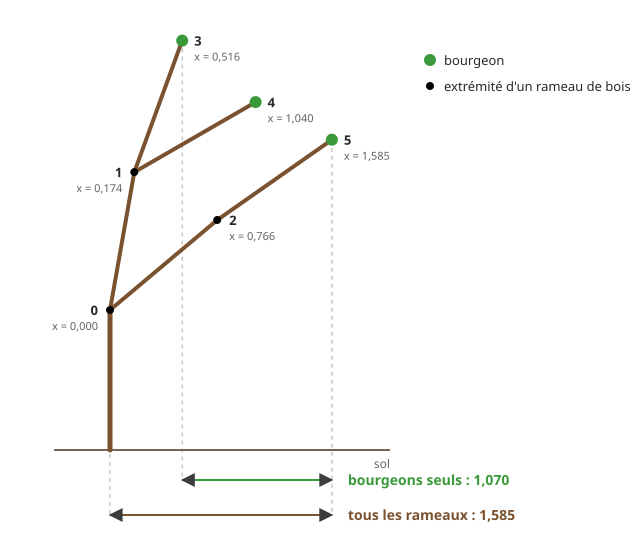
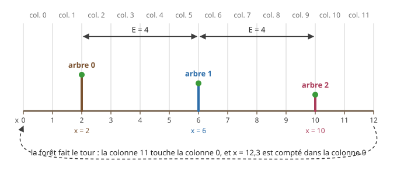
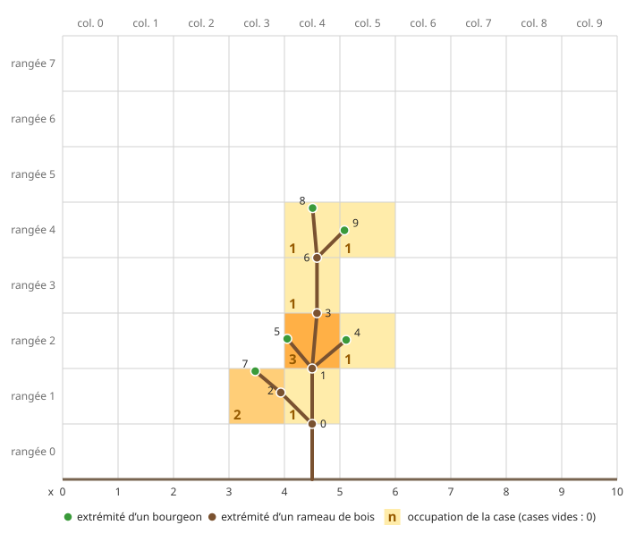

TI301 – Algorithmique et Structures de données 2 · Projet Informatique et Mathématiques
La forêt et la lumière Partie 2
Ce projet est rédigé en commun pour les modules SDD2 et Probabilités.
Idée originale, conception, réalisation : Nicolas FLASQUE Validation pour le module de probabilités : Federico ZALAMEA, Brice JUANICO Site web du projet et animations : Nicolas FLASQUE et Claude code pro - modèle Opus 5.5
⚠️ ATTENTION : ceci est indispensable pour la suite du projet. Avant d'écrire la moindre ligne de la partie 2, un membre de l'équipe ajoute au dépôt de l'équipe les fichiers fournis pour cette partie, en suivant le mode d'emploi Récupérer les fichiers de la partie 2 : quelques commandes à copier-coller, cinq minutes. Les autres membres font ensuite Git → Update Project.
Sans ces fichiers, pas de forêt : vous pourrez arroser votre main aussi longtemps que vous voudrez, rien n'y poussera.
En partie 1, un arbre poussait seul, en pleine lumière. Il est maintenant temps de faire pousser plusieurs arbres en même temps. Et comme les arbres se font de l'ombre, la pousse de chaque arbre dépend de celle de ses voisins : un bourgeon à l'ombre pousse moins souvent, et ses rameaux sont plus courts.
La partie 2 utilise les fonctions de la partie 1 : growBranch, canGrow, clampDirection, la file de rameaux et la structure t_arbre_step. Elles doivent être terminées et validées avant de commencer. Les fichiers de la partie 1 ne sont pas modifiés : tout le code de la partie 2 est écrit dans de nouveaux fichiers.
Organisation du projet
Partie 1 Faire pousser au hasard un arbre seul, en pleine lumière, et l'enregistrer dans un fichier ;
Partie 2 Faire pousser une forêt entière, dans laquelle les arbres se font de l'ombre ;
Partie 3 Simuler des milliers de forêts, analyser et visualiser les résultats.
1Un arbre de la forêt
Pour suivre la pousse d'une forêt, on a besoin de connaître, à chaque saison, les mesures de chacun de ses arbres :
son nombre de rameaux ;
sa hauteur : la plus grande génération de ses rameaux (le pied est de génération 0) ;
sa cime : la plus grande altitude d'une extrémité de ses rameaux ;
son extension : la largeur qu'il occupe, c'est-à-dire l'écart \(x_{max} - x_{min}\) entre la plus grande et la plus petite position \(x\) d'une extrémité de ses rameaux ;
son nombre de bourgeons, c'est-à-dire de rameaux sans fils.
On note aussi si l'arbre est tronqué : un arbre devenu trop gros ne pousse plus (voir La forêt qui pousse).
Ces mesures sont tenues à jour à chaque nouveau rameau : on ne parcourt jamais tout l'arbre pour les connaître, car la plupart de ses rameaux sont du bois, qui ne change plus.
Étape 1Mesurer un arbre
Objectif
Un arbre de la forêt est un t_arbre_step de la partie 1, auquel on ajoute son numéro dans la forêt et ses mesures :
typedef struct s_arbre_foret {
t_arbre_step step; // l'arbre, sa file de bourgeons et sa saison (partie 1, étape 3)
int id; // numéro de l'arbre dans la forêt
int hauteur; // génération maximale de ses rameaux
float cime; // altitude maximale des extrémités de ses rameaux
float xmin, xmax; // positions x minimale et maximale des extrémités de ses rameaux
int nb_bourgeons; // nombre de bourgeons (le nombre d'éléments de la file)
int tronque; // 1 si l'arbre a atteint P_max rameaux : il ne pousse plus
} t_arbre_foret;
Le nombre de rameaux est déjà tenu à jour par growBranch, dans step.arbre.nb_rameaux. L'extension de l'arbre est xmax - xmin.
Les autres mesures seront tenues à jour à l'étape 3. Pour vérifier ces mesures tenues à jour, il faut d'abord savoir les calculer « à l'ancienne », en parcourant tout l'arbre : c'est l'objet de cette étape.
À faire
Écrivez la structure et les prototypes dans le fichier arbre_foret.h, et les définitions dans arbre_foret.c : ces deux fichiers sont fournis vides. Testez-les depuis src/main_p2_etape1.c (cible CMake p2_etape_1). Ce programme est fourni : il fait les essais de la validation, et affiche vos résultats avec, en dessous, les résultats attendus. Il ne compile qu'une fois toutes les fonctions de l'étape écrites.
Les mesures récursives
Chacune de ces fonctions reçoit un rameau et mesure le sous-arbre dont il est la racine ; appelée sur le pied, elle mesure tout l'arbre.
Sept fonctions récursives
int countBranches(t_rameau *r) : nombre de rameaux ;
int computeHeight(t_rameau *r) : plus grande génération ;
float computeTop(t_rameau *r) : plus grande altitude d'une extrémité (la cime) ;
float computeXMin(t_rameau *r) et float computeXMax(t_rameau *r) : plus petite et plus grande position \(x\) d'une extrémité ;
int countBuds(t_rameau *r) : nombre de bourgeons, c'est-à-dire de feuilles ;
void freeBranches(t_rameau *r) : libère tous les rameaux, leurs tableaux de fils compris.
Indices : chacune traite le rameau r, puis s'appelle sur ses r->nb_fils fils. Pour freeBranches, attention à l'ordre : on ne peut plus lire r->p_fils une fois r libéré.
En optionPour les étudiants les plus avancés
Remplacez computeXMin et computeXMax par une seule fonction récursive, void computeExtension(t_rameau *r, float *p_xmin, float *p_xmax), qui range dans *p_xmin et *p_xmax la plus petite et la plus grande position \(x\) d'une extrémité du sous-arbre de r. Elle doit donner les mêmes valeurs que les deux fonctions. Cette version est-elle plus rapide ? Sa complexité est-elle meilleure ?
Autre question : à part freeBranches, votre enseignant affirme qu'on peut écrire une seule fonction récursive pour tous ces calculs. Qu'en pensez-vous ?
Question de réflexion
Pour la cime, on pourrait se contenter de regarder les bourgeons. Pour l'extension, il faut regarder tous les rameaux, bourgeons et bois. Pourquoi ? Comparez la façon dont un fils se place par rapport à son parent, en altitude et en position \(x\).
Dans l'arbre suivant, qui respecte les règles de pousse de la partie 1 (longueurs 1), les extrémités des bourgeons 3, 4 et 5 vont de \(x = 0{,}516\) à \(x = 1{,}585\) : une extension de 1,070. Mais l'extrémité du pied, devenu du bois, est en \(x = 0\) : l'extension de l'arbre est 1,585.

Le pied et ses fils partent tous vers la droite : l'extension mesurée sur les seuls bourgeons est trop petite
Créer et libérer un arbre de la forêt
t_arbre_foret createForestTree(int id, float x, float y, int seed)
Rôle : crée l'arbre numéro id, réduit à son pied d'extrémité \((x\,;\,y)\), avec ses mesures : hauteur 0, cime \(y\), \(x_{min} = x_{max} = x\), 1 bourgeon, non tronqué.
Indices : 😉 createTreeStep fait déjà presque tout.
void freeForestTree(t_arbre_foret *a)
Rôle : libère les cellules de la file des bourgeons, puis tous les rameaux de l'arbre.
Validation de l'étape 1
Lisez les arbres de la partie 1 avec readTree, et mesurez-les avec vos fonctions récursives, appelées sur leur pied. Vous devez obtenir :
Fichier
Rameaux
Hauteur
Cime
Extension
Bourgeons
exemple1.txt
10
4
4,893
1,638
5
arbre_petit.txt
10
3
4,135
2,675
4
arbre_moyen.txt
38
8
8,311
9,280
10
arbre_grand.txt
5 518
30
30,926
46,720
1 432
Pour exemple1.txt, l'arbre de l'exemple de la partie 1, vérifiez ces valeurs à la main : ses bourgeons sont les rameaux 4, 5, 7, 8 et 9, sa cime est l'extrémité du rameau 8, et son extension va de l'extrémité du rameau 7 à celle du rameau 4.
Le nombre de rameaux compté par countBranches est égal au champ nb_rameaux de l'arbre lu.
Un arbre créé par createForestTree(0, 0, 1, 1) a exactement les mesures que calculent vos fonctions récursives : 1 rameau, hauteur 0, cime 1, extension 0, 1 bourgeon.
Libérez chaque arbre lu avec freeBranches, et chaque arbre créé avec freeForestTree.
2Pousser à la lumière
Dans la forêt, chaque bourgeon reçoit une lumière \(L\), comprise entre 0 (le noir complet) et 1 (la pleine lumière), qui dépend des rameaux situés au-dessus de lui. Le calcul de cette lumière vient avec la forêt (voir La forêt) ; dans cette partie, on la suppose connue.
La table de pousse
À chaque saison, chaque bourgeon reçoit une lumière \(L\), et applique la table suivante :
Lumière \(L\)
Le bourgeon pousse…
Nombre de nouveaux rameaux, s'il pousse
\(L \geq 0{,}7\)
dans 95 % des cas
1 (70 %), 2 (25 %), 3 (5 %)
\(0{,}4 \leq L < 0{,}7\)
dans 70 % des cas
1 (85 %), 2 (15 %)
\(0{,}15 \leq L < 0{,}4\)
dans 40 % des cas
1
\(L < 0{,}15\)
dans 0 % des cas : il reste en dormance
–
Lecture : un bourgeon en pleine lumière pousse dans 95 % des cas ; s'il pousse, il donne 1 nouveau rameau dans 70 % des cas, 2 dans 25 % des cas, 3 dans 5 % des cas. En pleine lumière, on retrouve donc exactement la pousse de la partie 1. Un bourgeon qui ne pousse pas reste bourgeon et retentera sa chance à la saison suivante. Aucun rameau ne meurt : un bourgeon privé de lumière reste en dormance.
Étape 2Le nombre de nouveaux rameaux
Objectif
Généraliser la fonction howManyBranches de la partie 1 : tirer, selon la lumière que reçoit un bourgeon qui pousse, son nombre de nouveaux rameaux. Le tirage dans une table de taille quelconque, et le tirage de la pousse selon la lumière, sont fournis.
Code fourni
Les deux fonctions suivantes sont écrites dans croissance_lumiere.c, et leurs prototypes dans croissance_lumiere.h. Lisez-les : vous allez utiliser la première, et la seconde vous servira à l'étape 3.
int drawFromTable(float pourcentages[], int n)
Tire au hasard le numéro d'une tranche, entre 0 et n - 1, dans une table de n pourcentages (en %, leur somme vaut 100). Par exemple, avec la table {70, 25, 5}, elle renvoie 0 dans 70 % des cas, 1 dans 25 % des cas et 2 dans 5 % des cas. Elle tire un seul nombre \(u\), puis parcourt les tranches en cumulant les pourcentages (voir « Tirer dans une table » dans la partie Le hasard en C) ; elle compare \(u\) avec cumul / 100.0, exactement comme howManyBranches, pour retrouver les arbres de la partie 1.
int drawFromTable(float pourcentages[], int n)
{
int res = n - 1; // aucune des n - 1 premières tranches : c'est la dernière
int trouve = 0;
float cumul = 0;
double u = randomReal(); // un seul tirage
for (int i = 0; i < n - 1 && !trouve; i++)
{
cumul += pourcentages[i];
// comparaison avec cumul / 100.0, comme howManyBranches : on retrouve exactement les arbres de la partie 1
if (u < cumul / 100.0)
{
res = i;
trouve = 1;
}
}
return res;
}
int canGrowInLight(double lumiere)
Comme canGrow de la partie 1, tire au hasard si un bourgeon qui reçoit la lumière lumiere pousse, en appliquant la table de pousse. Elle renvoie 1 si le bourgeon pousse, 0 sinon. Un bourgeon en dormance (\(L < 0{,}15\)) pousse dans 0 % des cas, mais le tirage canGrow(0) est quand même fait : chaque bourgeon fait un tirage à chaque saison, quelle que soit sa lumière.
int canGrowInLight(double lumiere)
{
int res;
if (lumiere >= 0.7)
{
res = canGrow(95);
}
else if (lumiere >= 0.4)
{
res = canGrow(70);
}
else if (lumiere >= 0.15)
{
res = canGrow(40);
}
else
{
// dormance : le bourgeon pousse dans 0 % des cas, mais le tirage est fait, comme pour toute autre lumière
res = canGrow(0);
}
return res;
}
À faire
Écrivez la fonction suivante dans les fichiers croissance_lumiere.h (prototype) et croissance_lumiere.c (définition), à la suite du code fourni, et testez-la, avec le code fourni, depuis src/main_p2_etape2.c (cible CMake p2_etape_2). Ce programme est fourni : il fait les essais de la validation, et affiche vos résultats avec, en dessous, les résultats attendus. Il ne compile qu'une fois toutes les fonctions de l'étape écrites.
int howManyBranchesInLight(double lumiere)
Rôle : comme howManyBranches de la partie 1, tire au hasard le nombre de nouveaux rameaux (1, 2 ou 3) d'un bourgeon qui pousse et reçoit la lumière lumiere, en appliquant la table de pousse. Elle n'est appelée que si canGrowInLight a renvoyé 1 : la lumière est alors au moins 0,15.
Indices : un seul tirage, avec drawFromTable et la table de la lumière (la table {100} convient pour le dernier cas).
Validation de l'étape 2
Appelez 1 000 000 de fois chacune des deux fonctions pour quelques valeurs de \(L\), et comptez les résultats. Vous devez obtenir des nombres proches (à environ 2 000 près) de ceux des tableaux suivants.
Lumière
canGrowInLight renvoie 1
\(L = 1\)
950 000
\(L = 0{,}5\)
700 000
\(L = 0{,}2\)
400 000
\(L = 0{,}1\)
0
Lumière
1 rameau
2 rameaux
3 rameaux
\(L = 1\)
700 000
250 000
50 000
\(L = 0{,}5\)
850 000
150 000
0
\(L = 0{,}2\)
1 000 000
0
0
Pas de ligne \(L = 0{,}1\) pour howManyBranchesInLight : un bourgeon en dormance ne pousse jamais, la fonction n'est donc jamais appelée pour lui.
Avec la même graine, vous obtenez exactement les mêmes nombres.
Pour \(L = 1\), canGrowInLight(1) suivi, si le bourgeon pousse, de howManyBranchesInLight(1) donne exactement les mêmes résultats, dans le même ordre, que canGrow(95) suivi, si le bourgeon pousse, de howManyBranches(70, 25). Vérifiez-le sur 1 000 bourgeons, en initialisant deux fois le générateur avec la même graine.
La longueur des nouveaux rameaux
Quand un bourgeon pousse, les règles de la partie 1 s'appliquent (directions, côté, directions ramenées entre −80° et +80°), avec une seule différence : à l'ombre, les rameaux sont plus courts. Chaque nouveau rameau a une longueur
$$\ell = (0{,}5 + 0{,}5 \times L) \times u$$
où \(u\) est tiré au hasard entre 0,7 et 1,3. En pleine lumière (\(L = 1\)), on retrouve la longueur de la partie 1.
Étape 3Pousser avec une lumière donnée
Objectif
Faire pousser un arbre de la forêt saison par saison, comme growTreeStep de la partie 1, mais en appliquant la table de pousse avec une lumière donnée, la même pour tous ses bourgeons, et en tenant à jour ses mesures à chaque nouveau rameau.
À faire
Écrivez les fonctions suivantes dans arbre_foret.h et arbre_foret.c, et testez-les depuis src/main_p2_etape3.c (cible CMake p2_etape_3). Ce programme est fourni : il fait les essais de la validation, et affiche vos résultats avec, en dessous, les résultats attendus. Il ne compile qu'une fois toutes les fonctions de l'étape écrites. Il vous reste à y écrire le test automatique de la validation, à l'endroit indiqué.
La fonction clampDirection est définie dans croissance.c, sans prototype dans croissance.h : pour l'utiliser, écrivez son prototype, float clampDirection(float);, au début de arbre_foret.c.
void growBudInLight(t_arbre_foret *a, t_rameau *b, int n, double lumiere)
Rôle : comme growBud de la partie 1, fait naître n nouveaux rameaux à l'extrémité du bourgeon b, à la saison a->step.saison, mais avec la longueur \(\ell = (0{,}5 + 0{,}5 \times L) \times u\). Elle tient aussi à jour la hauteur, la cime, \(x_{min}\), \(x_{max}\) et le nombre de bourgeons de l'arbre.
Indices :
faites les tirages dans le même ordre que growBud : direction (ou côté puis angle), puis \(u\) = randomBetween(0.7, 1.3) ;
le bourgeon b devient du bois et ses n fils sont des bourgeons : combien de bourgeons l'arbre a-t-il gagnés ?
void growSeason(t_arbre_foret *a, double lumiere)
Rôle : fait jouer une saison à l'arbre a, comme growTreeStep de la partie 1, en donnant la même lumière lumiere à tous ses bourgeons.
Indices : la boucle est celle de growTreeStep ; seuls les tirages changent. Pour chaque bourgeon, canGrowInLight(lumiere) remplace canGrow(95) ; s'il pousse, et seulement dans ce cas, howManyBranchesInLight(lumiere) remplace howManyBranches(70, 25), puis growBudInLight remplace growBud.
Validation de l'étape 3
En pleine lumière (\(L = 1\)), un arbre créé en \((0\,;\,1)\) qui pousse avec growSeason est exactement l'arbre de la partie 1 : avec la graine 5 et 3 saisons, vous retrouvez arbre_petit.txt ; avec la graine 3 et 8 saisons, arbre_moyen.txt ; avec la graine 4 et 30 saisons, arbre_grand.txt (5 518 rameaux). Les fichiers arrondissent les directions et les longueurs à deux chiffres après la virgule : la cime de l'arbre qui a poussé (4,130 pour arbre_petit.txt) diffère donc un peu de celle de l'arbre lu à l'étape 1 (4,135).
Après chaque saison, les mesures tenues à jour (nombre de rameaux, hauteur, cime, nombre de bourgeons) sont exactement celles que calculent vos fonctions récursives. Écrivez un test automatique qui le vérifie pour 100 graines, 20 saisons, avec \(L = 1\) puis \(L = 0{,}5\).
La hauteur de l'arbre ne dépasse jamais le numéro de la saison, et elle augmente d'au plus 1 à chaque saison.
Avec la graine 1 et 20 saisons, en \((0\,;\,1)\) : pour \(L = 1\), vous obtenez 493 rameaux, une hauteur de 20, une cime à 19,869, une extension de 31,761 et 117 bourgeons ; pour \(L = 0{,}5\), 62 rameaux, une hauteur de 19, une cime à 14,509, une extension de 8,358 et 10 bourgeons.
3La forêt
Qu'est-ce qu'une forêt ?
Le sol de la forêt est découpé en colonnes de largeur 1, numérotées à partir de 0 : la colonne \(c\) contient les positions \(x\) comprises entre \(c\) (compris) et \(c + 1\) (non compris).
Une forêt est une ligne de \(K\) arbres plantés à intervalles réguliers : un arbre toutes les \(E\) colonnes, où \(E\) est l'écartement. La forêt compte donc \(C = K \times E\) colonnes, numérotées de 0 à \(C - 1\).
L'arbre numéro \(i\) (de 0 à \(K - 1\)) est planté en \(x = i \times E + E / 2\). À la saison 0, il n'a qu'un rameau vertical, son pied, dont l'extrémité est à une altitude tirée au hasard entre 0,5 et 1,5.
La forêt fait le tour : la colonne \(C - 1\) est voisine de la colonne 0, comme dans Pac-Man. Un rameau garde sa position \(x\), même si elle sort de l'intervalle entre 0 et \(C\) : c'est sa colonne qui fait le tour. La colonne d'une position \(x\) est sa partie entière, prise modulo \(C\).
Exemple. Avec \(K = 3\) arbres et un écartement \(E = 4\), la forêt compte \(C = 12\) colonnes, numérotées de 0 à 11. Les arbres 0, 1 et 2 sont plantés en \(x = 0 \times 4 + 2 = 2\), \(x = 6\) et \(x = 10\). Un rameau dont l'extrémité arrive en \(x = 12{,}3\) garde cette position, mais il est compté dans la colonne 0 ; un rameau dont l'extrémité arrive en \(x = -0{,}5\) est compté dans la colonne 11.

La forêt de l'exemple à la saison 0 (\(K = 3\), \(E = 4\)) : trois pieds, d'altitudes tirées au hasard
Les autres paramètres
\(A\), entre 0 et 1 : la part de lumière retenue par chaque extrémité de rameau (voir Le principe de l'ombrage).
\(H_{max}\) : comme le sol en colonnes, la hauteur est découpée en rangées de hauteur 1, numérotées à partir de 0 depuis le sol : la rangée \(r\) contient les altitudes \(y\) comprises entre \(r\) (compris) et \(r + 1\) (non compris). \(H_{max}\) est le nombre de rangées prises en compte pour l'ombre : une extrémité de rameau d'altitude \(y \geq H_{max}\) est comptée dans la dernière rangée, la rangée \(H_{max} - 1\). Par exemple, dans la forêt de l'exemple ci-dessus (\(C = 12\)) avec \(H_{max} = 160\), un rameau dont l'extrémité est en \((x\,;\,y) = (6{,}4\,;\,2{,}7)\) est compté dans la rangée 2 et la colonne 6, c'est-à-dire dans la case \((2\,;\,6)\) de la grille (voir Le principe de l'ombrage).
Le principe de l'ombrage
Pour savoir combien de lumière reçoit un bourgeon, on ne parcourt pas tous les rameaux de la forêt : on découpe la forêt en une grille de cases, en croisant ses \(C\) colonnes et ses \(H_{max}\) rangées, et on tient à jour deux grilles de même taille.
La grille d'occupation
La case \((r\,;\,c)\) est la partie de la colonne \(c\) située dans la rangée \(r\) : elle contient les points dont la position \(x\) est entre \(c\) et \(c + 1\), et l'altitude \(y\) entre \(r\) et \(r + 1\) (bornes inférieures comprises, bornes supérieures non comprises).
L'occupation d'une case est le nombre de rameaux, de tous les arbres, bourgeons ou bois, dont l'extrémité se trouve dans cette case. Une extrémité d'altitude \(y \geq H_{max}\) compte dans la dernière rangée.
Par exemple, l'arbre exemple1.txt de la partie 1, seul dans une forêt de 10 colonnes et 8 rangées, a ses 10 extrémités de rameaux dans 7 cases, toutes dans les colonnes 3 à 5 et les rangées 1 à 4 ; toutes les autres cases sont vides :
Rangée
Colonne 3
Colonne 4
Colonne 5
4
0
1 (rameau 8)
1 (rameau 9)
3
0
1 (rameau 6)
0
2
0
3 (rameaux 1, 3 et 5)
1 (rameau 4)
1
2 (rameaux 2 et 7)
1 (rameau 0)
0
0
0
0
0

L'arbre exemple1.txt dans la grille d'occupation : seule l'extrémité de chaque rameau compte, pas le rameau tout entier
Attention aux arrondis de l'affichage : le rameau 3 a son extrémité à l'altitude \(2 + \cos(5^\circ) \approx 2{,}996\), affichée 3,00 avec deux chiffres après la virgule : il est dans la rangée 2, et non dans la rangée 3. De même, le rameau 6 est dans la rangée 3.
La taille des grilles
Les deux grilles ont la même taille : \(H_{max}\) rangées et \(C = K \times E\) colonnes, soit \(H_{max} \times C\) cases chacune. La grille d'occupation contient des entiers, la grille de lumière des réels. Dans la simulation type (\(H_{max} = 160\), \(C = 250\)), chaque grille a 160 rangées et 250 colonnes, soit 40 000 cases.
Étape 4Remplir la grille d'occupation
Objectif
Une forêt réunit plusieurs arbres et les deux grilles qu'ils partagent :
typedef struct s_foret {
int K, E, C, HMAX; // nombre d'arbres, écartement, colonnes (C = K x E), rangées
double A; // part de lumière retenue par une extrémité de rameau
int P_max; // nombre maximal de rameaux d'un arbre
t_arbre_foret *arbres; // tableau dynamique des K arbres
int **occupation; // HMAX x C compteurs d'extrémités de rameaux
double **lumiere; // HMAX x C lumières
int saison; // nombre de saisons déjà écoulées
} t_foret;
Les tableaux occupation et lumiere sont des grilles de HMAX rangées et C colonnes, allouées dynamiquement en deux dimensions : un tableau de HMAX pointeurs, chacun vers une rangée de C cases. La case \((r\,;\,c)\) est occupation[r][c], ou lumiere[r][c].
Cette étape crée la forêt et remplit sa grille d'occupation ; la grille de lumière sera calculée à l'étape 5.
Code fourni
Les deux fonctions suivantes sont écrites dans foret.c, et leurs prototypes dans foret.h. Elles renvoient la colonne et la rangée de la case qui contient le point d'abscisse x ou d'altitude y. La forêt fait le tour : la position x peut être négative, ou au moins égale à C, et sa colonne est sa partie entière modulo C (en C, -1 % 12 vaut −1 : d'où la correction quand le reste est négatif). Une altitude d'au moins HMAX est dans la dernière rangée.
int columnOf(t_foret *f, float x)
{
// en C, -1 % 12 vaut -1 : on ramène le reste entre 0 et C - 1
int c = (int) floorf(x) % f->C;
if (c < 0)
{
c += f->C;
}
return c;
}
int rowOf(t_foret *f, float y)
{
int r = (int) floorf(y);
if (r >= f->HMAX)
{
r = f->HMAX - 1;
}
else if (r < 0)
{
r = 0; // ne se produit pas (un fils est toujours plus haut que son parent) : simple précaution
}
return r;
}
À faire
Écrivez la structure t_foret au début du fichier foret.h, à l'endroit indiqué : tant qu'elle n'est pas écrite, le code fourni ne compile pas. Écrivez ensuite les prototypes des fonctions suivantes dans foret.h, et leurs définitions dans foret.c, à la suite du code fourni. Testez-les depuis src/main_p2_etape4.c (cible CMake p2_etape_4). Ce programme est fourni : il fait les essais de la validation, et affiche vos résultats avec, en dessous, les résultats attendus. Il ne compile qu'une fois toutes les fonctions de l'étape écrites. Complétez-le avec vos propres cas, à l'endroit indiqué.
t_foret createForest(int K, int E, int HMAX, double A, int P_max)
Rôle : crée une forêt de K arbres, pas encore plantés : elle alloue le tableau des arbres et les deux grilles, et met les compteurs d'occupation à 0.
Indices : pour chaque grille, allouez d'abord le tableau des HMAX pointeurs de rangées, puis chaque rangée de C cases.
void addToGrid(t_foret *f, t_rameau *r)
Rôle : ajoute 1 au compteur d'occupation de la case où se trouve l'extrémité du rameau r. Elle sera appelée pour chaque nouveau rameau de la forêt, au moment où il est créé.
Indices : la case de l'extrémité \((x\,;\,y)\) de r est dans la rangée rowOf(f, r->y) et la colonne columnOf(f, r->x) : addToGrid doit appeler ces deux fonctions fournies, et ne jamais calculer la case elle-même.
void addTreeToGrid(t_foret *f, t_rameau *r)
Rôle : ajoute à la grille l'extrémité de r et de tous les rameaux de son sous-arbre. Elle sert pour un arbre déjà construit, par exemple lu dans un fichier.
Indices : une fonction récursive, sur le modèle de countBranches, qui appelle addToGrid.
Validation de l'étape 4
Dans la forêt de l'exemple (\(K = 3\), \(E = 4\), donc 12 colonnes, et \(H_{max} = 160\)) : columnOf(&f, 6.4) vaut 6, columnOf(&f, 11.99) vaut 11, columnOf(&f, 12.3) vaut 0, columnOf(&f, -0.5) vaut 11, rowOf(&f, 2.7) vaut 2 et rowOf(&f, 163.2) vaut 159.
Créez une forêt de 1 arbre, de 10 colonnes (\(E = 10\)) et 8 rangées, avec \(A = 0{,}5\), et rangez dans son arbre 0 l'arbre lu dans exemple1.txt : f.arbres[0].step.arbre = readTree("data/exemple1.txt");, puis ajoutez ses rameaux à la grille avec addTreeToGrid. Vous devez retrouver l'occupation du tableau ci-dessus ; la somme de tous les compteurs vaut 10, le nombre de rameaux de l'arbre.
Construisez deux ou trois autres cas à la main, dont un rameau d'altitude supérieure à HMAX (il est compté dans la dernière rangée).
La grille de lumière
La lumière vient du ciel. Chaque extrémité de rameau qu'elle traverse en retient une part \(A\) (paramètre de la forêt, par exemple \(A = 0{,}25\)). Dans une case, la lumière reçue vaut donc :
$$L = (1 - A)^n$$
où \(n\) est le nombre de rameaux (de tous les arbres, bourgeons ou bois) dont l'extrémité est dans la même colonne et dans une rangée strictement plus haute. Une case sans aucun rameau au-dessus reçoit une lumière de 1.
Exemple. Une colonne contient trois extrémités de rameaux : deux dans la rangée 5 et une dans la rangée 9. Avec \(A = 0{,}5\), la lumière vaut 1 dans les rangées 9 et au-dessus, \(0{,}5\) dans les rangées 5 à 8, et \(0{,}5 \times 0{,}5 \times 0{,}5 = 0{,}125\) dans les rangées 0 à 4.
Exemples
Voici la lumière des cases de la forêt de l'arbre exemple1.txt, avec \(A = 0{,}5\). Les colonnes 0 à 2 et 6 à 9, et les rangées 5 à 7, reçoivent une lumière de 1. Un arbre se fait de l'ombre à lui-même : son bourgeon 5 ne reçoit plus que 0,25 de lumière.
Rangée
Colonne 3
Colonne 4
Colonne 5
4
1
1 (rameau 8)
1 (rameau 9)
3
1
0,5 (rameau 6)
0,5
2
1
0,25 (rameaux 1, 3 et 5)
0,5 (rameau 4)
1
1 (rameaux 2 et 7)
0,03125 (rameau 0)
0,25
0
0,25
0,015625
0,25
Voici la pousse d'un arbre seul, saison par saison, avec \(A = 0{,}5\). À gauche, l'occupation de la grille : le nombre d'extrémités de rameaux de chaque case, écrit dans son coin ; les extrémités des bourgeons sont des ronds verts, celles du bois des petits ronds noirs. À droite, la lumière de chaque case, calculée à partir de cette occupation : c'est celle que recevront ses bourgeons à la saison suivante. La couleur d'une case indique la ligne de la table de pousse (voir Pousser à la lumière) qui s'appliquera à ses bourgeons. L'arbre se fait de l'ombre à lui-même : ses rameaux du bas finissent dans le noir, seuls ceux de la cime poussent encore.

Un arbre seul : occupation et lumière (graine 3, 8 saisons, \(A = 0{,}5\), une saison = 1,2 seconde)
Étape 5Calculer la lumière
Objectif
Calculer la grille de lumière à partir de la grille d'occupation, puis lire la lumière que reçoit un bourgeon.
À faire
Écrivez les fonctions suivantes dans foret.h et foret.c, et testez-les depuis src/main_p2_etape5.c (cible CMake p2_etape_5). Ce programme est fourni : il fait les essais de la validation, et affiche vos résultats avec, en dessous, les résultats attendus. Il ne compile qu'une fois toutes les fonctions de l'étape écrites.
void computeLight(t_foret *f)
Rôle : calcule la lumière de toutes les cases de la grille, à partir de l'occupation, déjà à jour.
Indices : calculez la lumière colonne par colonne, du haut vers le bas, en un seul passage par colonne : en descendant, on tient à jour la lumière \((1 - A)^n\), en la multipliant par \((1 - A)\) pour chaque extrémité rencontrée. Attention : les extrémités d'une case font de l'ombre aux rangées en dessous, pas à leur propre case.
double getLight(t_foret *f, t_rameau *r)
Rôle : renvoie la lumière de la case où se trouve l'extrémité du rameau r.
Validation de l'étape 5
La colonne de l'exemple, construite à la main par le programme fourni (trois extrémités, \(A = 0{,}5\)) : vous devez retrouver 1, 0,5 et 0,125.
Reprenez la forêt de l'arbre exemple1.txt de l'étape 4. Après computeLight, vous devez retrouver les valeurs du tableau de lumière ci-dessus ; en particulier, les bourgeons 4, 5, 7, 8 et 9 reçoivent une lumière de 0,5 ; 0,25 ; 1 ; 1 et 1.
4La forêt qui pousse
Le déroulement d'une saison
Une saison se déroule en deux temps :
Éclairer : calculer la lumière de chaque case, à partir du nombre d'extrémités de rameaux de chaque case ;
Pousser : faire jouer tous les bourgeons de tous les arbres, de l'arbre 0 à l'arbre \(K - 1\), avec les lumières calculées au temps 1.
Le nombre d'extrémités de chaque case, l'occupation de la grille, est tenu à jour : on ajoute chaque nouveau rameau au moment où il est créé, sans jamais recompter tous les rameaux de la forêt. Comme la lumière est calculée au temps 1, un rameau créé pendant une saison n'est pris en compte, pour la lumière, qu'à partir de la saison suivante. Une simulation dure \(S\) saisons (par exemple \(S = 120\)).
Un arbre ne doit pas grossir sans limite : un arbre qui a au moins \(P_{max}\) rameaux à la fin d'une saison (par exemple \(P_{max} = 20\,000\)) est marqué tronqué, et il ne pousse plus.
La graine du générateur fixe tous les tirages : avec la même graine et les mêmes paramètres, on obtient exactement la même forêt.
Exemple. Les paramètres d'une simulation type :
Paramètre
Rôle
Valeur
\(K\)
nombre d'arbres
50
\(E\)
écartement entre deux arbres
5
\(C = K \times E\)
nombre de colonnes
250
\(A\)
part de lumière retenue par une extrémité
0,25
\(H_{max}\)
nombre de rangées
160
\(P_{max}\)
nombre maximal de rameaux d'un arbre
20 000
\(S\)
nombre de saisons
120
Voici maintenant une petite forêt. Choisissez le nombre d'arbres \(K\), l'écartement \(E\) entre deux pieds (la grille a donc \(C = K \times E\) colonnes), la part de lumière \(A\) retenue par une extrémité, le nombre de saisons \(S\) et la graine, puis lancez la simulation. Avec la même graine et les mêmes réglages, on obtient toujours la même forêt ; le bouton « Graine au hasard » en tire une autre. Les branches qui sortent à droite de la grille réapparaissent à gauche : la forêt fait le tour.
Avec les réglages de départ (\(K = 3\), \(E = 3\), \(A = 0{,}25\), \(S = 10\), graine 6), les arbres sont plantés en \(x = 1{,}5\), \(x = 4{,}5\) et \(x = 7{,}5\). L'arbre 2 prend du retard et reste à l'ombre de ses voisins : 16 rameaux, contre 39 et 53 pour les deux autres. Rapprochez les arbres (\(E = 1\)) et rendez-les opaques (\(A = 1\)) : la forêt ne compte plus que 26 rameaux, contre 108. Cochez « Pieds à la même altitude » : les arbres partent alors à égalité, et les écarts entre eux ne viennent plus que des tirages de la pousse.
Sous la figure, mettez l'animation en pause et avancez saison par saison ; survolez une case (ou touchez-la) pour voir le calcul de sa lumière. Le tableau donne les mesures de chaque arbre à la fin de la simulation.
Réglez les curseurs, puis lancez la simulation.

Une forêt de 3 arbres, E = 3, donc 9 colonnes ; A = 0,25 ; graine 6 ; 10 saisons ; altitudes des pieds tirées au hasard ; une saison = 1,2 seconde
Étape 6Faire pousser une forêt
Objectif
Assembler le tout : planter les \(K\) arbres, puis faire jouer les saisons en deux temps, éclairer puis pousser.
À faire
Écrivez les fonctions suivantes dans foret.h et foret.c, et testez-les depuis src/main_p2_etape6.c (cible CMake p2_etape_6). Ce programme est fourni : il fait les essais de la validation, et affiche vos résultats avec, en dessous, les résultats attendus. Il ne compile qu'une fois toutes les fonctions de l'étape écrites.
void plantForest(t_foret *f, int seed, int identique)
Rôle : plante les \(K\) arbres de la forêt, l'arbre i en \(x = i \times E + E / 2\), et initialise le hasard avec la graine seed. Avec identique à 1, tous les pieds ont leur extrémité à l'altitude 1 ; sinon, l'altitude de chaque pied est tirée au hasard entre 0,5 et 1,5.
Indices :
créez d'abord les \(K\) arbres avec createForestTree, avec un pied d'altitude 1 ;
createTreeStep, donc createTree, a réinitialisé le hasard à chaque arbre : appelez ensuiterandomInit(seed), une seule fois pour toute la forêt ;
puis, si identique vaut 0, tirez l'altitude du pied de chaque arbre, de l'arbre 0 à l'arbre \(K - 1\), avec randomBetween(0.5, 1.5), et mettez à jour le pied (son \(y\) et sa longueur) et la cime de l'arbre ;
enfin, ajoutez le pied de chaque arbre à la grille, à son altitude définitive, avec addToGrid.
Rôle : fait jouer une saison à l'arbre a de la forêt f, comme growSeason, mais chaque bourgeon reçoit la lumière de sa case, lue dans la grille avec getLight.
Indices :
la saison de l'arbre augmente de 1, même s'il est tronqué ; un arbre tronqué ne fait aucun tirage ;
chaque nouveau rameau est ajouté à la grille avec addToGrid ; sa position \(x\) n'est pas modifiée : c'est columnOf qui fait faire le tour à la forêt ;
à la fin de la saison, un arbre qui a au moins P_max rameaux est marqué tronqué.
void growForestSeason(t_foret *f), void simulateForest(t_foret *f, int S) et void freeForest(t_foret *f)
Rôle : growForestSeason fait jouer une saison à toute la forêt, en deux temps : computeLight, puis la saison de chaque arbre, de l'arbre 0 à l'arbre \(K - 1\). simulateForest fait jouer \(S\) saisons. freeForest libère tous les arbres, puis les tableaux de la forêt : pour chaque grille, les rangées d'abord, puis le tableau des pointeurs de rangées.
Question de réflexion
Pourquoi calcule-t-on toutes les lumières avant de faire pousser le moindre bourgeon ? Que se passerait-il si l'on mettait la grille à jour après chaque arbre ? Quel arbre serait avantagé ?
Validation de l'étape 6
Pour chaque arbre, les mesures tenues à jour sont celles que calculent vos fonctions récursives, et la somme des nombres de rameaux des arbres est égale à la somme des compteurs d'occupation de la grille. Mieux : l'occupation tenue à jour est exactement celle d'une nouvelle grille, remplie avec addTreeToGrid pour tous les arbres.
Avec un seul arbre (\(K = 1\), \(E = 10\)), \(A = 0\) (aucune ombre), la plantation identique et la graine 3, après 8 saisons, vous retrouvez l'arbre de arbre_moyen.txt, décalé de 5 vers la droite : chaque rameau a la même altitude, et une position \(x\) plus grande de 5.
Avec la même graine, deux simulations donnent exactement la même forêt.
Avec \(K = 24\), \(E = 3\), \(A = 0{,}25\), \(H_{max} = 160\), \(P_{max} = 20\,000\), la graine 1 et 32 saisons, la forêt compte 6 809 rameaux ; l'arbre 0 a 352 rameaux, une hauteur de 32, une cime à 33,009, une extension de 17,479 et 87 bourgeons ; l'arbre 7, étouffé par ses voisins, n'a que 17 rameaux, une hauteur de 8 et une extension de 3,941.
Voir votre forêt
La fonction saveForest, fournie dans sauver_foret.c, écrit une forêt dans un fichier texte. La page Visualiseur dessine ce fichier : vous obtenez une image PNG et un GIF animé de sa pousse. Elle accepte aussi les fichiers écrits par saveTree (partie 1).
Le fichier fourni data/foret_exemple.txt est la forêt de la dernière validation (\(K = 24\), graine 1, 32 saisons) : écrivez la vôtre avec saveForest, et déposez les deux fichiers ; vous devez obtenir exactement la même image.
En optionMettre à jour la grille pendant la pousse
Programmez la variante où la grille est recalculée après chaque arbre, et comparez les hauteurs des arbres numéro 0 et numéro \(K - 1\) dans les deux versions.
5Le hasard en C
Vous continuez à utiliser le module alea.h / alea.c de la partie 1 ; la fonction rand() reste interdite. La graine est un paramètre de la simulation : avec la même graine, on obtient exactement la même forêt.
⚠️ Comme en partie 1, n'appelez pas randomInit vous-même, avec une seule exception : plantForest, qui initialise le hasard une fois pour toute la forêt, après avoir créé ses arbres.
Tirer dans une table
Pour choisir 1, 2 ou 3 nouveaux rameaux dans 70 %, 25 % et 5 % des cas, on tire un nombre \(u\) = randomReal(), puis on renvoie 1 si \(u < 0{,}70\) ; sinon 2 si \(u < 0{,}70 + 0{,}25 = 0{,}95\) ; sinon 3. Chaque résultat correspond à une « tranche » de l'intervalle entre 0 et 1, dont la largeur est le pourcentage voulu.
Avec une table de \(n\) pourcentages, on fait de même : on cumule les pourcentages, tranche après tranche, jusqu'à la première tranche dont le cumul dépasse \(u\).